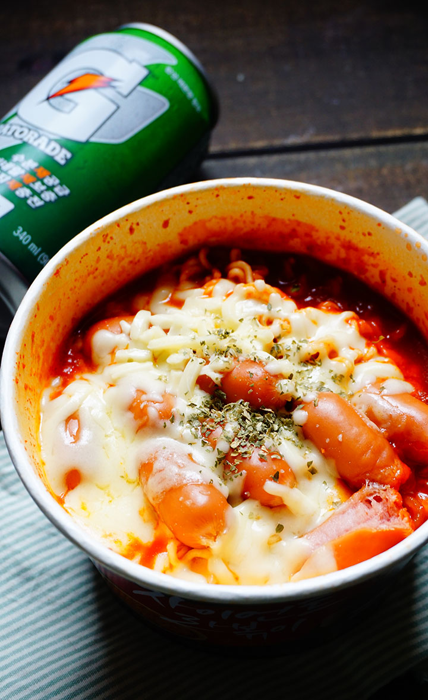

All Recipe
Register
My Recipe
마크 정식

재료
자이언트떡볶이 + 스파게티 컵라면 + 소시지 + 치즈
시간
30분 이내
설명
'마크정식'의 창시자가 이 음식을 만들게 된 이유는 바로 마크의 이름을 만방에 알리기 위한 것이다.
우선 스파게티 면에 뜨거운 물을 부어 익힌다. 그리고 자이언트떡볶이는
전자레인지에 3분동안 돌린 뒤 동봉된 소스로 잘 버무린다.
그 후 스파게티면을 인스턴트 떡볶이에 넣고, 소시지와 치즈를 뿌린 뒤
전자레인지에 15-30초 동안 돌린다.